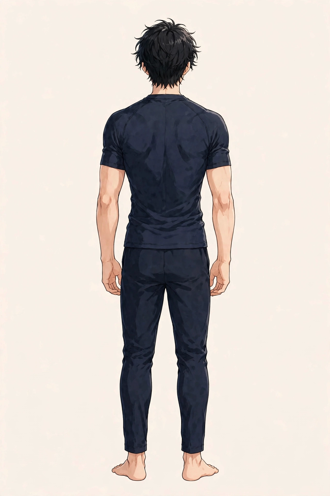

SYMPTOM GUIDE ｜ 東三国・新大阪
全身のむくみでお悩みの方へ東三国・新大阪の男性専用整体院 北辰堂

朝は顔が腫れぼったい、夕方は脚が重く靴がきつい、指輪が抜けにくい日がある——。全身のむくみ感は、水分の巡りの滞りとして現れる、働く男性にも多い悩みです。
むくみは、水分バランス・塩分・姿勢・筋ポンプの働きが重なって現れます。一方で、心臓や腎臓などの状態のサインの場合もあります。このページでは、むくみの仕組みと朝夕の違い、ツボ、セルフケア、受診の目安をまとめました。一般的な健康情報としてお読みください。
① 全身のむくみとは
むくみ（浮腫）は、血管の外の組織に水分が過剰にたまった状態です。体内の水分は、血液の圧力とたんぱく質濃度、リンパの回収、腎臓での調整のバランスで保たれています。そのバランスが崩れると、重力の影響を受けやすい部位（起きている間は脚、寝起きは顔や手）に水分が寄ります。
朝と夕方で出方が違うのは、この重力と姿勢の影響です。夕方の脚のむくみは、長時間の同一姿勢で筋ポンプが働かず、水分が脚にたまるためです。朝の顔のむくみは、横になって水分が上半身へ戻ることと、前日の塩分や飲酒の影響が重なります。
注意が必要なのは、全身のむくみが病気のサインの場合です。心臓・腎臓・肝臓の状態、甲状腺の状態、薬の影響などが、むくみとして現れることがあります。息切れを伴う、急に増えた、尿の様子が変わったなどの場合は、早めの確認が必要です。
腓腹筋とヒラメ筋は、収縮するたびに静脈を押し上げ、水分を心臓へ戻す筋ポンプの中心です。使う機会が少ないと、水分が下半身にたまります。位置は目安です。
② 要因の整理
全身のむくみの背景は、水分の調整と巡りの問題が重なっています。
- 塩分の多い食事：塩分が増えると、体は濃度を保つために水分をため込みやすくなります。外食や加工食品が多い生活では影響が出やすくなります。
- 同一姿勢の長さ（筋ポンプの低下）：座りっぱなし・立ちっぱなしでは、ふくらはぎの筋ポンプが働かず、水分が脚にたまります。
- 飲酒：飲酒は利尿と脱水、その後の水分の取り込みを招き、翌朝の顔のむくみにつながりやすい要因です。
- 睡眠と姿勢：睡眠中は横になるため水分が上半身へ戻り、朝の顔やまぶたのむくみとして現れます。枕の高さも影響します。
- 運動不足と筋肉量の低下：筋ポンプの力そのものが弱くなると、日常のむくみが抜けにくくなります。
- 服装の締め付け：きつい靴下や下着のゴムの跡が深く残る場合、巡りが妨げられているサインの場合があります。
③ セルフチェックリスト
むくみの出方と、生活の土台を振り返るためのチェックです。
- 朝、顔やまぶたが腫れぼったい
- 夕方になると靴がきつく感じる
- 靴下の跡がなかなか消えない
- 指輪が抜けにくい日がある
- 脚を押すと跡がしばらく残る
- 塩分の多い食事や飲酒が多い
- 座りっぱなし・立ちっぱなしの時間が長い
- 体重が短期間で増えた感じがする
チェックは診断のためのものではありません。息切れを伴う、片側だけ急に腫れた、尿の様子が変わったなどの様子がある場合は、⑧の受診の目安を先に確認してください。
④ 東洋医学から見た考え方とツボ
東洋医学では、むくみは「水の巡りの滞り」と捉え、水分代謝に関係する経絡から整える考え方があります。お腹を任脈が、脚の内側を足太陰脾経が巡ります。
陰陵泉・水分・三陰交は、水の巡りに関係する代表的なツボです。北辰堂では鍼灸施術は行いませんが、ツボの考え方は、体の緊張の状態を確認する施術の組み立てと、セルフケアの案内に活かしています。

水分はおへそのすぐ上、陰陵泉は膝の内側下方のくぼみ、三陰交は内くるぶしから指4本分ほど上にあります。位置は目安です。
ツボ：陰陵泉（いんりょうせん）
位置：膝の内側の下方、すねの骨の後ろのくぼみにあります。水の巡りと結びつけて考えられる代表的なツボです。
押し方：親指でくぼみをゆっくり圧を加えます。夕方、脚の重さを感じた日のケアに使います。
ツボ：水分（すいぶん）
位置：おへそのすぐ上（指1本分ほど上）にあります。名前のとおり、水の巡りと結びつけて考えられてきたツボです。
押し方：手のひらでお腹を温めながら、ゆっくり圧を加えます。強く押さず、心地よい範囲で行います。
ツボ：三陰交（さんいんこう）
位置：内くるぶしから指4本分ほど上、すねの骨の後ろ側にあります。下半身の巡りと結びつけて考えられるツボです。
押し方：親指でゆっくり圧を加えます。入浴後など、体が温まった時間に行います。
⑤ 整体・リラクゼーションでの施術の考え方
北辰堂の施術では、まず、むくみの出方（時期・部位・左右差）と、医療機関での確認を優先すべき様子（息切れ、急な体重増加、尿の変化など）がないかを確認します。そのうえで、脚・腰まわりの緊張を緩め、筋ポンプの働きを助ける方向で施術を組み立てます。
むくみのある方の体は、巡りが滞り、脚まわりの緊張が強い状態にあることが多くあります。施術で緊張をほどくことは、巡りの補助になります。あわせて、塩分・姿勢・運動など、日常側の整え方を案内します。
むくみの背景にある病気の診断と治療は医療機関の領域です。息切れを伴う場合や急に強くなった場合は、施術より先に受診を案内します。当院の役割は、体の緊張と巡りに対するケアの補助です。
むくみの経過を把握するには、朝と夕方の脚の太さや体重の変化を記録することが助けになります。同じ条件で比べることで、塩分の多かった日、長く座った日など、自分のむくみやすい条件が見えてきます。記録は、医療機関へ相談する際の説明にも役立ちます。急な変化と緩やかな変化では意味が異なるため、「いつから、どのように」が分かる形で残しておくことが大切です。
⑥ セルフケア
セルフケアの狙いは、筋ポンプを働かせ、水分をため込まない日常の土台を作ることです。
①壁に手をついて立つ ②かかとをゆっくり上げて下ろす、を15回繰り返す ③最後に足首を大きく回す、が基本の流れです。
セルフケア1：ふくらはぎのポンプ運動
壁に手をついて立ち、かかとの上げ下ろしをゆっくり15回繰り返します。筋ポンプを働かせ、脚にたまった水分を戻す助けにします。仕事の合間にもできます。
セルフケア2：足を高くして休む
帰宅後や就寝前に、クッションなどで脚を心臓より少し高くして10分ほど休みます。たまった水分が戻りやすい姿勢です。
セルフケア3：塩分と飲酒の見直し
夕食の塩分を控えめにし、飲酒の量と頻度を見直します。翌朝の顔のむくみが気になる方では、影響が分かりやすい項目です。
セルフケア4：入浴と脚の運動
湯船に浸かって体を温め、入浴後に足首回しを行います。巡りを助け、夕方の脚の重さのケアになります。
⑦ 場面別の注意
- デスクワーク中：1時間に一度は立ち上がり、その場でかかとの上げ下ろしをします。足首を動かすだけでも筋ポンプは働きます。
- 夕方・帰宅後：脚のむくみが最も出る時間帯です。帰宅後は脚を高くして休み、入浴で温めます。
- 飲酒の翌朝：顔のむくみが出やすい場面です。水分を少しずつ取り、朝の歩行で巡りを助けます。
- 就寝前：脚を高くして休んでから布団に入ります。きついゴムの靴下は外し、巡りを妨げない状態にします。
⑧ 受診の目安
- 息切れや、横になると苦しい感じを伴う
- 短期間で体重が大きく増えた
- 尿の量や色の様子が変わった
- 片側の脚だけ急に腫れて痛む
- むくみが数週間続き、改善しない
- 服用中の薬が増えた時期からむくみが出た
全身のむくみは、心臓・腎臓・肝臓・甲状腺の状態や、薬の影響のサインの場合があります。息切れを伴う場合や急な変化がある場合は特に、医療機関（内科）で評価を受けてください。
⑨ よくある質問
Q. 朝と夕方でむくむ場所が違うのはなぜですか？
重力と姿勢の影響です。起きている間は水分が脚に寄り、寝ている間は上半身へ戻ります。そのため、夕方は脚、朝は顔やまぶたに出やすくなります。塩分や飲酒の影響も朝のむくみに重なります。
Q. マッサージを受ければむくみは取れますか？
施術で緊張をほどくことは、巡りの補助になります。ただし、むくみは塩分・姿勢・筋ポンプなど日常の重なりで起こるため、施術だけで完結するものではありません。日常側の整え方もあわせて案内します。
Q. 水分を控えた方がよいですか？
自己判断での水分制限はおすすめしません。脱水はかえって巡りを悪くします。心臓や腎臓の状態によっては制限が必要な場合もあるため、気になる場合は医療機関に相談してください。
Q. むくみがあっても運動してよいですか？
軽い運動は筋ポンプを働かせ、むくみのケアに役立ちます。ただし、息切れを伴う場合や、医師から運動の制限を受けている場合は、先に医療機関へ相談してください。
北辰堂のご案内
北辰堂は、大阪市淀川区東三国二丁目にある整体院です。男性スタッフ1人で運営しているため、男性専用としています。施術歴30年の平賀伸人（鍼灸師・国家資格）が、整体とリラクゼーションを行います。当院では鍼灸施術は行いません。営業は平日・土曜17:00〜22:00、日曜10:00〜22:00の完全予約制です。料金は60分 初回2,000円／2回目以降6,000円、90分 初回3,000円／2回目以降9,000円で、お支払いは現金のみです。プライバシーへの配慮のため、詳しい住所はご予約確定後にLINEでご案内します。
メニュー・料金は料金・メニューページ、施術者については当院についてをご覧ください。
関連するお悩み
ご予約・ご相談はLINEから
東三国・新大阪・淀川区周辺で、全身のむくみの相談先をお探しの方は、LINE公式アカウント（北辰堂）からお気軽にご連絡ください。むくみの出方をお聞きしたうえで、施術の進め方をご案内します。
LINEで予約する